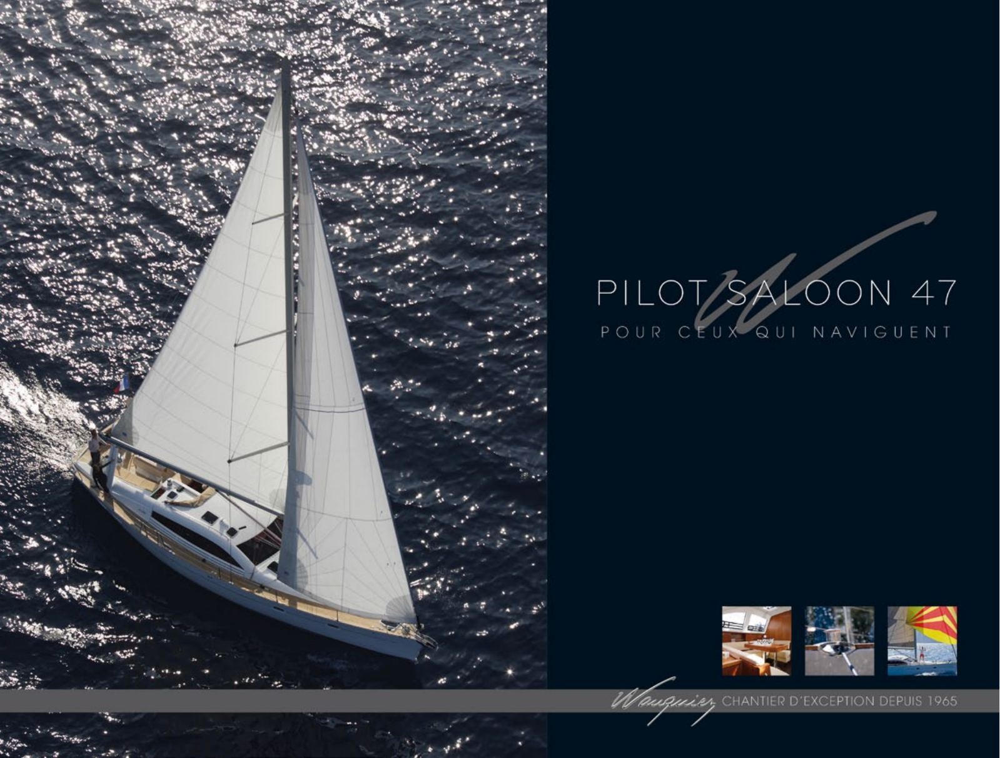
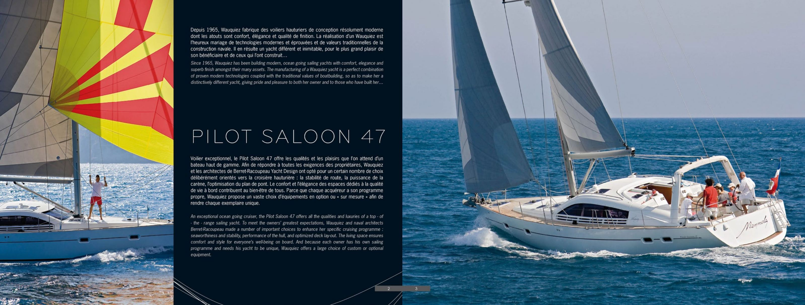
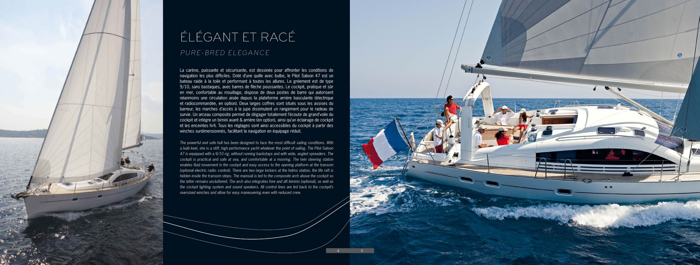
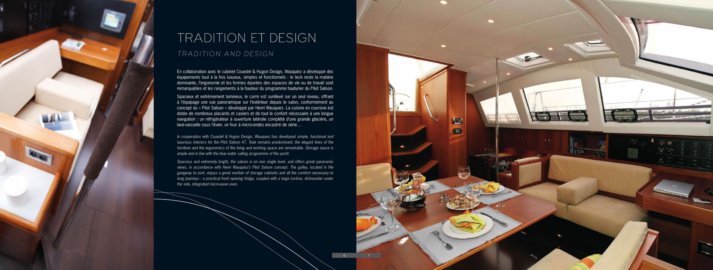
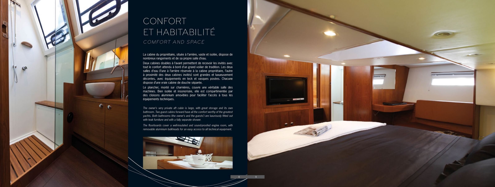
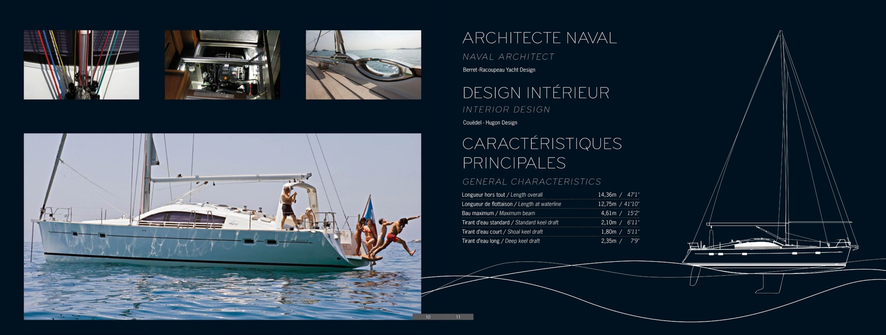
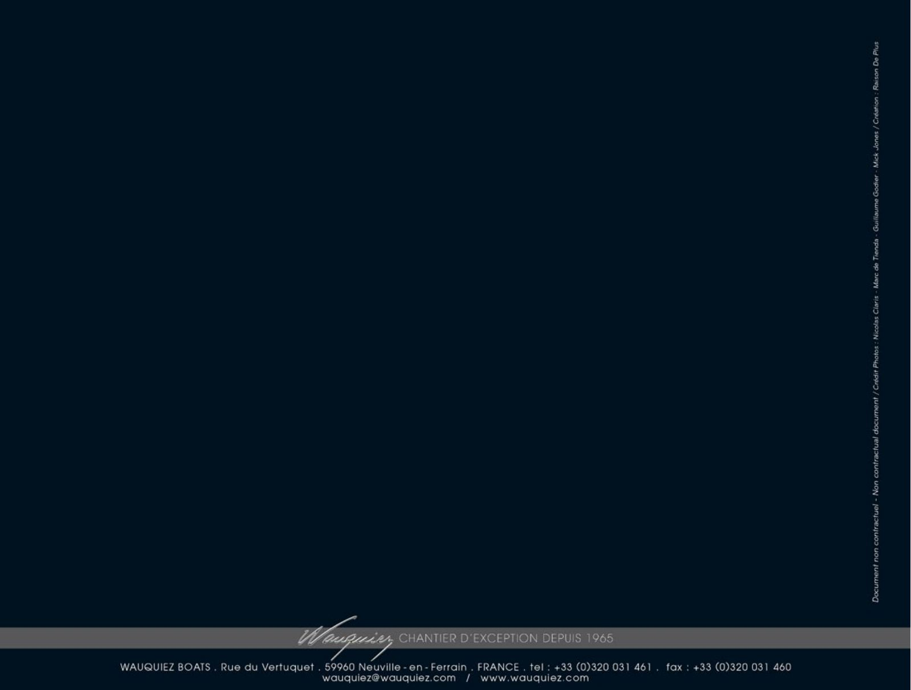

Phoenix
Phoenix
Phoenix
Phoenix
Wauquiez factory brochure · Pilot Saloon 47 class, not this boat
This is the builder’s seven-page brochure for the Pilot Saloon 47 class, rebuilt from the PDF in Phoenix’s project folder. The original sets French text beside an English translation in italics; the English is reproduced below as printed, under each French and English heading. The pages are shown as images because the brochure’s text is part of the page artwork. Equipment and options described are the factory’s, not an inventory of Phoenix. Original: PDF, 1.8 MB.
Brochure page 1 of 7
Pour ceux qui naviguent

Brochure page 2 of 7
Since 1965, Wauquiez has been building modern, ocean going sailing yachts with comfort, elegance and superb finish amongst their many assets. The manufacturing of a Wauquiez yacht is a perfect combination of proven modern technologies coupled with the traditional values of boatbuilding, so as to make her a distinctively different yacht, giving pride and pleasure to both her owner and to those who have built her…
An exceptional ocean going cruiser, the Pilot Saloon 47 offers all the qualities and luxuries of a top-of-the-range sailing yacht. To meet the owners’ greatest expectations, Wauquiez and naval architects Berret-Racoupeau made a number of important choices to enhance her specific cruising programme: seaworthiness and stability, performance of the hull, and optimized deck lay-out. The living space ensures comfort and style for everyone’s well-being on board. And because each owner has his own sailing programme and needs his yacht to be unique, Wauquiez offers a large choice of custom or optional equipment.

Brochure page 3 of 7
Pure-bred elegance
The powerful and safe hull has been designed to face the most difficult sailing conditions. With a bulb keel, she is a stiff, high performance yacht whatever the point of sailing. The Pilot Saloon 47 is equipped with a 9/10 rig, without running backstays and with wide, angled spreaders. The cockpit is practical and safe at sea, and comfortable at a mooring. The twin steering station enables fluid movement in the cockpit and easy access to the opening platform at the transom (optional electric radio-control). There are two large lockers at the helms station, the life raft is hidden inside the transom steps. The mainsail is led to the composite arch above the cockpit so the latter remains uncluttered. The arch also integrates fore and aft biminis (optional), as well as the cockpit lighting system and sound speakers. All control lines are led back to the cockpit’s oversized winches and allow for easy maneuvering even with reduced crew.

Brochure page 4 of 7
Tradition and design
In cooperation with Couedel & Hugon Design, Wauquiez has developed simple, functional and luxurious interiors for the Pilot Saloon 47. Teak remains predominant; the elegant lines of the furniture and the ergonomics of the living and working space are remarkable. Storage space is ample and in line with the blue water sailing programme of the yacht.
Spacious and extremely bright, the saloon is on one single level, and offers great panoramic views, in accordance with Henri Wauquiez’s Pilot Saloon concept. The galley, located in the gangway to port, enjoys a great number of storage cabinets and all the comfort necessary to long journeys : a practical front opening fridge, coupled with a large ice-box, dishwasher under the sink, integrated micro-wave oven.

Brochure page 5 of 7
Comfort and space
The owner’s very private aft cabin is large, with great storage and its own bathroom. Two guest cabins forward have all the comfort worthy of the greatest yachts. Both bathrooms (the owner’s and the guests’) are luxuriously fitted out with teak furniture and with a fully separate shower.
The floorboards cover a well-insulated and sound-proofed engine room, with removable aluminium bulkheads for an easy access to all technical equipment.

Brochure page 6 of 7
Berret-Racoupeau Yacht Design
Couëdel - Hugon Design
| Longueur / Length | Metric / Imperial |
|---|---|
| Length overall | 14,36 m / 47′1″ |
| Length at waterline | 12,75 m / 41′10″ |
| Maximum beam | 4,61 m / 15′2″ |
| Standard keel draft | 2,10 m / 6′11″ |
| Shoal keel draft | 1,80 m / 5′11″ |
| Deep keel draft | 2,35 m / 7′9″ |

